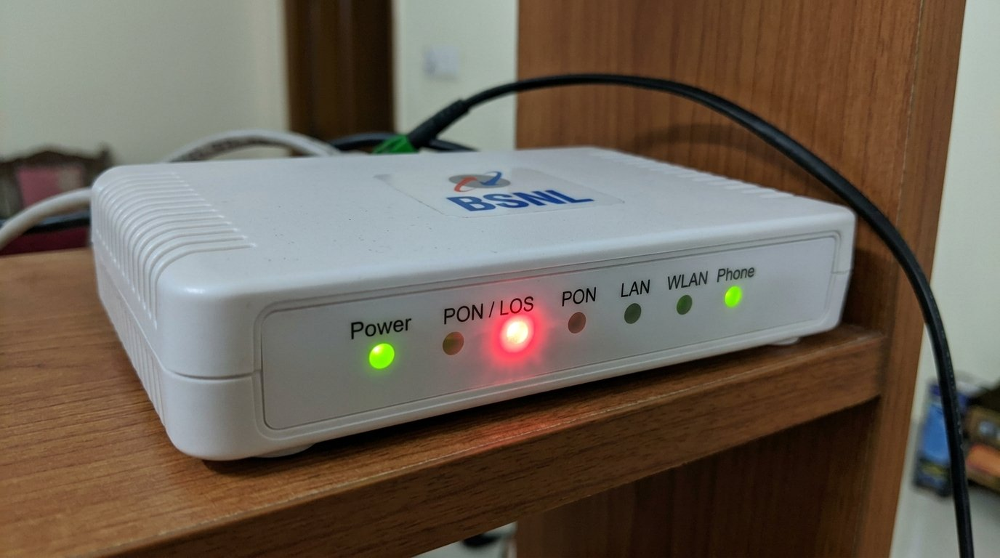
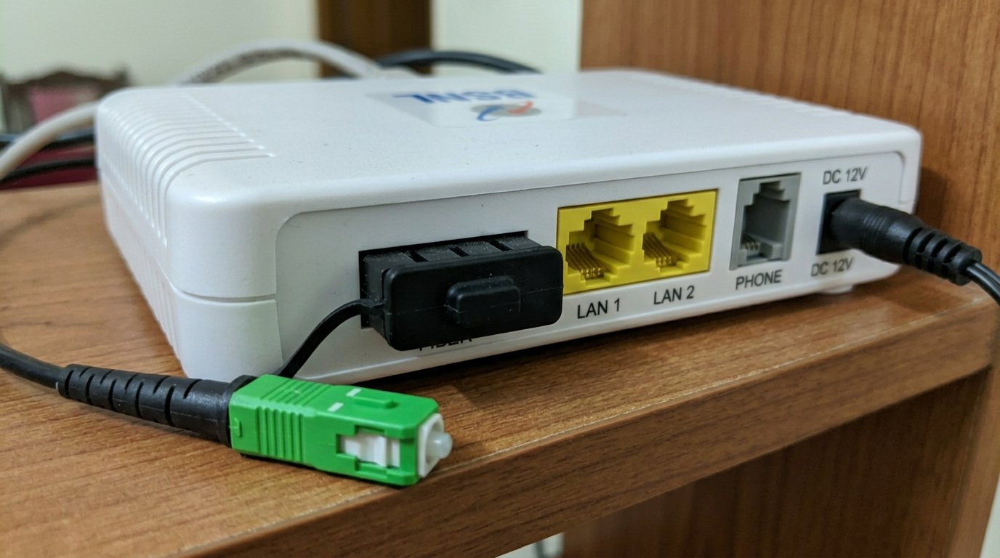
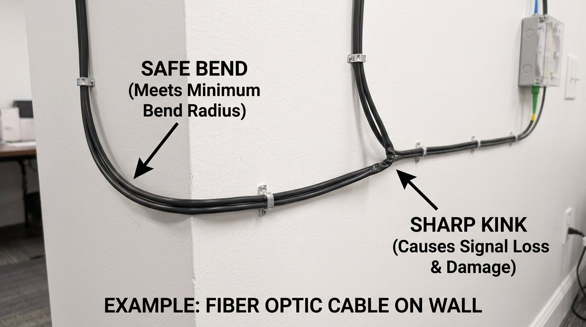
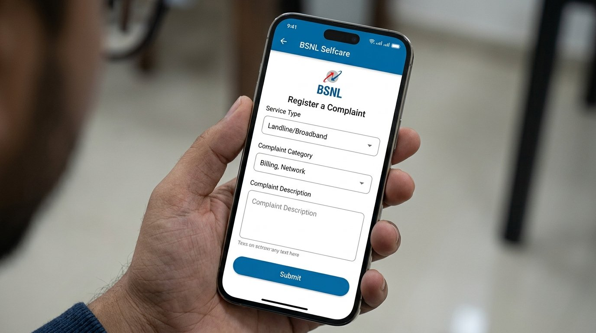

BSNL Fiber ONT Blinking Red Light: What It Means and How to Fix It
Your BSNL fiber connection just died and the ONT box is sitting there blinking red at you. That little light means something specific — and once you know what, you'll probably have it sorted in the next 15 minutes.
What Is the Blinking Red Light on a BSNL Fiber ONT?
The ONT (Optical Network Terminal) is the white box BSNL installed at your home — it's what converts the fiber signal into your Wi-Fi and LAN connection. A blinking red light on the ONT almost always means it's not receiving an optical signal from the fiber line. In plain terms, the light that should be coming down the cable from the exchange isn't reaching your box.
The indicator light you're watching is usually labelled PON/LOS on the front panel — Loss of Signal. When it blinks red, it means the optical receiver inside the ONT is powered up and working, but it can't detect any light pulses from the fiber cable connected to it. The good news is that this is almost always fixable at home.

Why Does This Happen?
There are four main reasons a BSNL fiber ONT shows a blinking red light:
- Loose or dirty fiber connector. The fiber cable that plugs into your ONT ends in a small connector, and it's surprisingly easy for this to get dusty or slightly loose — especially if the box is on the floor or near a door. In India, construction dust and general air particulate can coat the connector tip enough to block the optical signal. You'd be surprised how often a simple clean-and-reseat fixes this completely.
- Fiber cable bent or damaged. Unlike a regular ethernet cable, fiber doesn't like being bent at sharp angles. If someone moved furniture, ran a vacuum cleaner over the cable, or a kid tugged at it, there could be a kink that's interrupting the light signal. Even a small crack in the outer jacket near a bend point can cause signal loss.
- Power fluctuation or ONT firmware freeze. This is a very common India-specific cause — voltage fluctuations during load-shedding, or during the post-monsoon reconnection when BSNL's local exchange equipment restarts, can leave your ONT in a stuck state. The hardware is fine, but the device needs a proper reboot to re-sync with the exchange.
- Problem at the exchange or on the line outside your home. Sometimes the issue isn't inside at all. Fiber cuts happen — from road work, overhead cable damage during storms, or maintenance at the local BSNL exchange. During summer, BSNL exchanges in some areas also go into overload mode when too many subscribers reconnect after a power cut. This one you can't fix yourself, but it's worth ruling out everything else first.
How to Fix a BSNL Fiber ONT Blinking Red Light — Step by Step
Start at Step 1 and move down only if needed. The quickest fixes are at the top.
Before touching any cables, always begin with a proper restart. A temporary glitch at BSNL's exchange end — lasting only seconds — can put your ONT into a stuck LOS state that doesn't recover on its own.
- Switch the ONT off using the power button or by unplugging it from the socket.
- Wait a full 60 seconds — not 10, not 30. This allows the device's optical receiver circuitry to fully discharge and reset.
- Plug it back in and wait another 2–3 minutes for it to fully boot and attempt to sync with the exchange.
- Watch the optical light (usually labelled "PON" or "LOS") — it should go from red to green once the signal is established.
If the light is still red after 3 minutes of waiting, move to Step 2.
This step alone fixes the blinking red light for most people — so don't rush past it. Look at the back of your ONT box. There's a small round port where the fiber cable plugs in — it usually has a little rubber dust cap when nothing is inserted.
- Power the ONT off completely by unplugging from the wall. Wait 30 seconds.
- Locate the fiber cable port at the back — it will be labelled FIBER or PON.
- Gently pull the connector out by gripping the connector body (not the cable itself).
- Look at the connector tip. If you see dust or smudging, blow on it lightly or wipe the tip once with a dry lint-free cloth in a straight motion — never in circles.
- Push the connector firmly back in until you feel or hear a small click. Don't yank the cable — fiber is glass inside and it will snap if you're rough with it.
- Power the ONT back on and wait 3 minutes to see if the red light clears.

If reseating the connector didn't help, physically inspect the entire fiber cable from the ONT to where it exits your home. A kinked or sharply bent cable breaks the internal glass fiber — producing the exact same blinking red LOS signal as a disconnected cable.
- Follow the fiber cable from the ONT to wherever it exits your home — usually through a wall or window.
- Look for any sharp bends, pinched sections, or spots where the outer jacket looks crushed or cracked.
- Fiber cables must never be bent tighter than approximately 30 mm radius — about the diameter of a ₹10 coin. Any tighter bend risks cracking the glass core inside.
- If you find a sharp kink, gently straighten it and give the cable a little slack. Make sure no furniture legs are sitting on it and no doors are closing against it.
- If you find a point where the cable has a permanent crease or shows a faint glow at the bend (leaking light), the cable is damaged and will need to be replaced by a BSNL technician.
- After straightening any bends found, restart the ONT (Step 1) and check whether the LOS clears.

Before concluding your equipment is at fault, spend two minutes confirming whether BSNL has a service disruption in your area. A problem at the exchange causes every subscriber on that node to show red light simultaneously — and no amount of home troubleshooting will resolve it until BSNL fixes their end.
- Ask a neighbour on BSNL fiber if their connection is also down. If it is, the problem is at the exchange or on the line outside — there's nothing for you to do except raise a complaint.
- Check Twitter/X — search "BSNL fiber down" or "BSNL outage" to see if others in your city are reporting the same issue.
- Call 1800-345-1500 (BSNL broadband helpline, toll-free) or lodge a complaint via the BSNL Self Care app.
- Note your complaint number — it helps when you follow up.
- If no outage is confirmed and neighbours have working BSNL internet, the issue is specific to your line. Move to Step 5.

If the cable looks fine, you've restarted properly, no neighbors are affected, and the connector is firmly seated — try a factory reset. This forces the ONT to fully re-register with the BSNL network from scratch, which can clear a corrupted firmware state that a regular restart won't fix.
- Locate the small reset pinhole on the ONT — look for "Reset" printed next to a tiny hole on the back or bottom panel.
- Use a SIM ejector pin or a straightened paperclip to press and hold the reset button for 10 seconds while the device is on.
- The ONT will restart automatically. All indicator lights will briefly go off and then come back on.
- Wait 5 full minutes before judging whether it worked — the ONT needs time to re-register with the BSNL network after a factory reset.
- If the red light clears to green, reconfigure your Wi-Fi name and password if needed.
When You Should Call a Service Engineer
If you've gone through all five steps and the ONT is still blinking red, the fiber cable itself is likely damaged somewhere between your home and the street-side junction box — or the ONT hardware has failed. Here's when to stop DIY troubleshooting and call BSNL:
- The fiber cable is visibly damaged — a permanent kink, crushed section, or a point that glows faintly. Fiber cable repair requires splicing equipment that only field engineers carry.
- All five steps above have been completed with no improvement and no reported outage in your area. The fault is on BSNL's infrastructure between your home and the OLT exchange.
- The red light clears but returns within hours or days. Intermittent LOS is a classic sign of a degraded fiber splice or contaminated connector at an external junction — a technician with optical power measurement equipment can pinpoint it.
- The ONT hardware appears to have failed — no lights at all, visible physical damage, or the device is hot to the touch.
A fiber cable repair or replacement is not a DIY job because it requires splicing equipment. BSNL's field engineers handle this at no extra charge if you're within your plan's service terms, though response times vary by region. If the ONT itself has failed, replacement units typically cost ₹1,500–2,500, though BSNL sometimes swaps them under warranty — ask explicitly when you call.
How to reach BSNL support:
- BSNL Broadband Helpline: 1800-345-1500 (toll-free, 24 hours)
- BSNL Self Care App: Available on Android and iOS — raise a complaint under Landline/Broadband
- BSNL Customer Service Portal: selfcare.bsnl.co.in — log in with your account to raise a service request online
Quick Summary
| Fix | Difficulty | Time Needed |
|---|---|---|
| Restart the ONT with a full 60-second power-off | Very Easy | 3–5 minutes |
| Reseat the fiber connector at the back of the ONT | Easy | 5 minutes |
| Trace cable for sharp bends or physical damage | Easy | 10 minutes |
| Check for BSNL outage / raise a complaint | Very Easy | 2 minutes |
| Factory reset the ONT | Moderate | 10 minutes |
A blinking red light on your BSNL fiber ONT looks alarming, but it's usually one of two things: a device that needs a restart, or a connector that needs reseating. Work through the steps in order and you'll most likely have your connection back before you finish your chai. If it genuinely is a line fault outside, your BSNL complaint will get it sorted — fiber line repairs are well within what their field teams handle regularly.